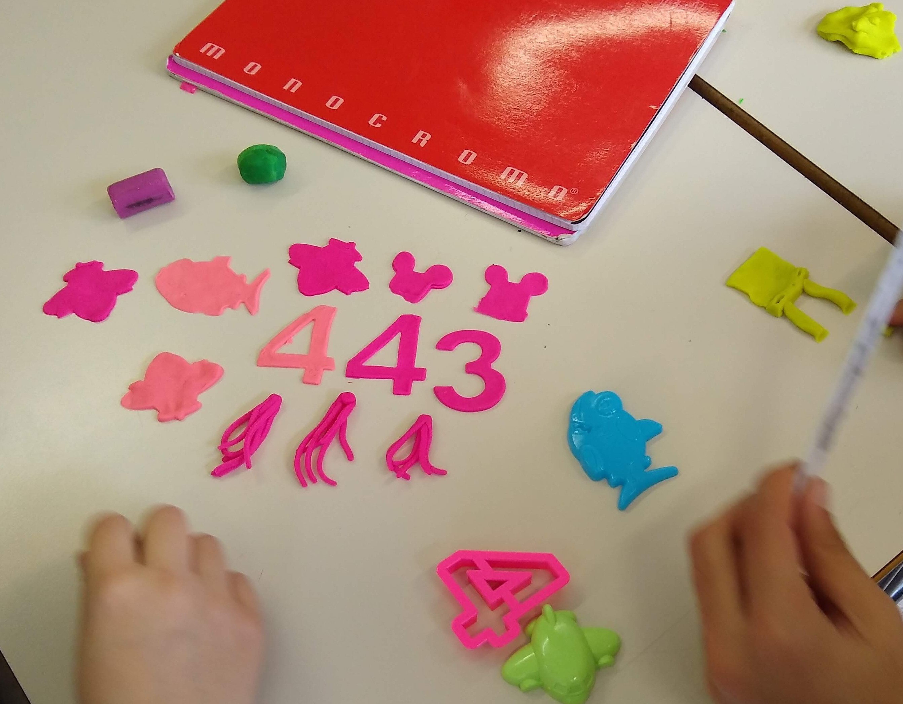

Le classi
Abbiamo detto che un linguaggio di programmazione ci serve per risolvere problemi nel mondo reale. Per poter svolgere correttamente il suo lavoro, il linguaggio deve permetterci di rappresentare facilmente i concetti del mondo reale a cui facciamo riferimento.
Ad esempio, nel mio progetto ora ho le variabili cappuccetto rosso e la casa della nonna. Guardando semplicemente il codice, le variabili cappuccetto e house sono create ed usate in modo molto simile, non sono legate ad un concetto particolare distinto. L'unica cosa che differenzia le due variabili è il nome, a cui il programmatore umano sa dare un senso, ma per il computer (in questo caso il compilatore) i nomi delle variabili sono semplicemente un insieme di caratteri senza un particolare significato.
Il compilatore è il software che interpreta il codice che abbiamo scritto e lo traduce in linguaggio macchina. Se ci sono degli errori di sintassi nel nostro codice, il compilatore non riuscirà ad interpretarlo correttamente e ci restituirà un errore.
Si possono dare maggiori indizi al compilatore (e ai programmatori del mio team) per poter gestire meglio i diversi tipi di variabili?
La risposta è sì, e il modo in cui si fa è tramite la creazione di nuovi assegnare tipi da assegnare alle variabili. Ad esempio possiamo dire che cappuccetto è una Bambina, o un Personaggio della mia storia, o quello che vogliamo.
Analogamente,
housepotrebbe essere di tipoEdificio.
Come facciamo in pratica a fare una cosa del genere? Per creare nuovi tipi in Processing il modo più semplice è dichiarare una classe.
Classi
Le classi in informatica sono come degli stampini che servono per creare degli oggetti. Rivediamo un attimo l'attività che abbiamo fatto in classe.

Gli stampini che avete usato avevano una forma ben definita: aereo, squalo, numero, etc. Potevate usare ogni stampino per creare tanti oggetti dello stesso tipo, ad esempio tanti aerei. Gli oggetti così creati saranno tutti molto simili fra loro, ma non perfettamente uguali: nel momento della creazione o dopo averlo stampato, possiamo modificarli un pochino.
Un vantaggio di usare questi stampini/classi è che possiamo creare velocemente degli oggetti simili tra di loro. Lo svantaggio è, che se dobbiamo modificare molto l'oggetto dopo la crezione, le cose cominciano a diventare complicate. Non c'è una regola assoluta per la scelta: in generale, cercate di mantenere il senso di quello che state facendo: non cercate di trasformare la formina di un aereo in un pesce, o viceversa.
Dichiarazione di una classe
Ipotizziamo che, nel nostro progetto, vogliamo che cappuccetto rosso sia un Personaggio. Per prima cosa, definiamo un nuovo tipo.
class Personaggio {};
Vediamo bene la sintassi, in ordine da sinistra a destra:
- la keyword
class, che dichiara una nuova classe - l'identificativo della classe, in questo caso la
Personaggio - le parentesi graffe, che rappresentano il corpo (in inglese body) della classe
- un punto e virgola
;che chiude la dichiarazione della classe
Proviamo ad usare questo nuovo tipo.
class Personaggio {};
Personaggio cappuccetto;
OK, abbiamo fatto in modo di esplicitare che cappuccetto rosso non è una forma qualsiasi, ma un Personaggio!
A questo punto però, se proviamo a compilare il programma, ci restituisce un errore quando proviamo ad assegnare cappuccetto con createShape(...). L'errore è il seguente:
Type mismatch, "PShape" does not match with "Personaggio".
Perché questa cosa? Riflettiamo: stiamo provando ad assegnare alla nostra variabile cappuccetto una forma, ma adesso il tipo è cambiato, e il compilatore non sa come assegnare una forma ad un personaggio. È giunto il momento di scrivere qualcosa nel corpo della classe.
Costruttore
Per prima cosa, dobbiamo dire che il nostro personaggio ha una forma. Inseriamo quindi all'interno della classe la dichiarazione di una variabile forma:
class Personaggio {
PShape forma;
};
Guardate bene: abbiamo dichiarato una variabile di tipo forma dentro la classe personaggio. Bisogna quindi tenere in considerazione che:
- si può usare questa variabile solo se si sta utilizzando un personaggio
- ogni personaggio avrà una forma diversa
Finora abbiamo dichiarato la variabile forma, ma quando la assegniamo? L'assegnazione delle variabili della classe di solito avviene all'interno di una funzione speciale, chiamata costruttore. Questa funzione ha lo stesso nome della classe, e non bisogna specificare il valore di ritorno.
class Personaggio {
PShape forma;
Personaggio() { // questo è il costruttore!
// qui dentro ci mettiamo quello che ci serve per inizializzare il nostro oggetto
forma = createShape(RECT, 0, 0, 30, 30);
}
};
Ora dobbiamo andare ad assegnare il valore corretto alla variabile cappuccetto. Questo si fa tramite una nuova keyword: new.
void setup() {
// ...
// Utilizziamo la keyword new per "stampare" un nuovo oggetto dalla classe
cappuccetto = new Personaggio();
}
OK, ora non abbiamo più l'errore di prima ma ne è comparso un altro per riga dopo:
cappuccetto.setFill(color(255,0,0));
The function "setFill(int)" does not exist.
Perché questo? Cerchiamo di capire bene: abbiamo utilizzato il simbolo punto (.) subito dopo la variabile cappuccetto. Cosa significa questo punto? Risposta: significa che stiamo andando a richiamare variabili e funzioni all'interno della classe di cui fa parte cappuccetto, in questo caso Personaggio. In effetti, se andiamo a vedere dentro la classe c'è solo il costruttore, non esiste un metodo setFill().
Ci sono varie soluzioni possibili: una potrebbe essere creare il metodo che ci serve. Per ora però usiamo una strategia diversa: visto che il setFill() fa parte della creazione del personaggio, mettiamo questo metodo dentro il costruttore della classe:
class Personaggio {
PShape forma;
Personaggio() {
forma = createShape(RECT, 0, 0, 30, 30);
forma.setFill(color(255,0,0));
}
};
Fate attenzione: abbiamo richiamato setFill() sulla variabile forma, perché all'interno della classe, è questa variabile a dover cambiare colore.
OK, anche questo errore è risolto. Ma ne abbiamo ancora uno (l'ultimo, per fortuna):
shape(cappuccetto, xCappuccetto, height*0.5);
The function "shape()" expects parameters like: "shape(PShape, float, float)"
Questo perché la funzione shape() si aspetta come primo parametro una variabile di tipo PShape, ma noi gli stiamo passando una variabile di tipo Personaggio.
Per risolvere questo problema, possiamo creare una funzione disegna() dentro la classe Personaggio, che, come dice il nome, disegna il nostro personaggio. Proviamo.
class Personaggio {
//...
void disegna() {
shape(forma, xCappuccetto, height*0.5);
}
};
void draw() {}
// ...
// chiamiamo il nuovo metodo disegna()
cappuccetto.disegna();
}
OK, ora funziona tutto!!
Scriviamo di seguito il codice completo, per riferimento.
Personaggio cappuccetto;
PShape house;
int xCappuccetto = 10;
class Personaggio {
PShape forma;
Personaggio() {
forma = createShape(RECT, 0, 0, 30, 30);
forma.setFill(color(255,0,0));
}
void disegna() {
shape(forma, xCappuccetto, height*0.5);
}
};
void setup() {
fullScreen(); // usa tutto lo schermo
cappuccetto = new Personaggio();
house = createShape(RECT, 0, 0, 100, 100);
}
void draw() {
background(#00FF00); // siamo nella foresta, lo sfondo è verde
//disegniamo la casa a destra, a metà altezza dello schermo
shape(house, width*0.8, height*0.5);
//disegniamo cappuccetto a metà altezza dello schermo
cappuccetto.disegna();
// incremento la coordinata x di cappuccetto
// solo se non è ancora nella casa della nonna
if (xCappuccetto < width*0.8) {
xCappuccetto = xCappuccetto + 5;
}
}